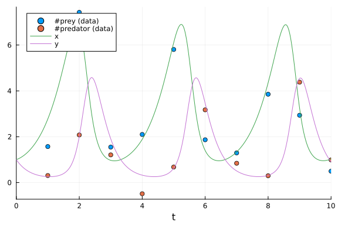

Lotka-Volterra Bayesian Parameter Estimation Benchmarks
Parameter Estimation of Lotka-Volterra Equation using DiffEqBayes.jl
using DiffEqBayes, StanSample, DynamicHMC, Turingusing Distributions, BenchmarkTools, StaticArrays
using OrdinaryDiffEq, RecursiveArrayTools, ParameterizedFunctions
using Plots, LinearAlgebra"""Display ESS/s (effective samples per second) from a Turing chain."""
function display_ess_per_sec(chain, elapsed)
stats = summarystats(chain)
ess_bulk = stats[:, :ess_bulk]
println("Elapsed time: $(round(elapsed; digits=2)) seconds\n")
println("ESS/s (effective samples per second, bulk):")
for (i, param) in enumerate(stats[:, :parameters])
println(" $param: $(round(ess_bulk[i] / elapsed; digits=1))")
end
println("\nMinimum ESS/s (bulk): $(round(minimum(ess_bulk) / elapsed; digits=1))")
end
"""Extract and display Stan's internal timing from its CSV output files."""
function display_stan_timing(stan_result)
sample_files = stan_result.model.sample_file
for (chain_idx, f) in enumerate(sample_files)
isfile(f) || continue
lines = readlines(f)
println("Chain $chain_idx timing (from Stan CSV):")
for line in lines
if startswith(line, "#") && occursin("Elapsed Time", line)
println(" ", strip(line[2:end]))
elseif startswith(line, "#") && occursin("seconds", line)
println(" ", strip(line[2:end]))
end
end
end
endMain.var"##WeaveSandBox#277".display_stan_timinggr(fmt = :png)Plots.GRBackend()Initializing the problem
f = @ode_def LotkaVolterraTest begin
dx = a*x - b*x*y
dy = -c*y + d*x*y
end a b c dMain.var"##WeaveSandBox#277".LotkaVolterraTest{Main.var"##WeaveSandBox#277"
.var"###ParameterizedDiffEqFunction#279", Main.var"##WeaveSandBox#277".var"
###ParameterizedTGradFunction#280", Main.var"##WeaveSandBox#277".var"###Par
ameterizedJacobianFunction#281", Nothing, Nothing, ModelingToolkit.System}(
Main.var"##WeaveSandBox#277".var"##ParameterizedDiffEqFunction#279", Linear
Algebra.UniformScaling{Bool}(true), nothing, Main.var"##WeaveSandBox#277".v
ar"##ParameterizedTGradFunction#280", Main.var"##WeaveSandBox#277".var"##Pa
rameterizedJacobianFunction#281", nothing, nothing, nothing, nothing, nothi
ng, nothing, nothing, [:x, :y], :t, nothing, Model ##Parameterized#278:
Equations (2):
2 standard: see equations(##Parameterized#278)
Unknowns (2): see unknowns(##Parameterized#278)
x(t)
y(t)
Parameters (4): see parameters(##Parameterized#278)
a
b
c
d, nothing, nothing)u0 = [1.0, 1.0]
tspan = (0.0, 10.0)
p = [1.5, 1.0, 3.0, 1.0]4-element Vector{Float64}:
1.5
1.0
3.0
1.0prob = ODEProblem(f, u0, tspan, p)
sol = solve(prob, Tsit5())retcode: Success
Interpolation: specialized 4th order "free" interpolation
t: 34-element Vector{Float64}:
0.0
0.0776084743154256
0.2326451370670694
0.42911851563726466
0.679082199936808
0.9444046279774128
1.2674601918628516
1.61929140093895
1.9869755481702074
2.2640903679981617
⋮
7.5848624442719235
7.978067891667038
8.483164641366145
8.719247691882519
8.949206449510513
9.200184762926114
9.438028551201125
9.711807820573478
10.0
u: 34-element Vector{Vector{Float64}}:
[1.0, 1.0]
[1.0454942346944578, 0.8576684823217127]
[1.1758715885890039, 0.6394595702308833]
[1.4196809580265157, 0.456996261440507]
[1.876719397626222, 0.32473342884607376]
[2.5882501035146124, 0.26336255403957287]
[3.86070908479701, 0.27944581878759067]
[5.750813064347344, 0.5220073551361064]
[6.814978696356639, 1.9177834056716259]
[4.392997771045281, 4.194671543390715]
⋮
[2.614251082502646, 0.26416954350041094]
[4.241070648057705, 0.3051232653305123]
[6.791121825691655, 1.1345253835487776]
[6.2653749402951835, 2.741688595595249]
[3.7807688120522114, 4.431164521488329]
[1.8164214705303103, 4.064057991958692]
[1.1465028256357626, 2.7911730348239576]
[0.9557986528530791, 1.6235633163407794]
[1.0337581330572256, 0.9063703732076024]su0 = SA[1.0, 1.0]
sp = SA[1.5, 1.0, 3.0, 1.0]
sprob = ODEProblem{false, SciMLBase.FullSpecialize}(f, su0, tspan, sp)
sol = solve(sprob, Tsit5())retcode: Success
Interpolation: specialized 4th order "free" interpolation
t: 34-element Vector{Float64}:
0.0
0.0776084743154256
0.2326451370670694
0.42911851563726466
0.679082199936808
0.9444046279774128
1.2674601918628516
1.61929140093895
1.9869755481702074
2.2640903679981617
⋮
7.5848624442719235
7.978067891667038
8.483164641366145
8.719247691882519
8.949206449510513
9.200184762926114
9.438028551201125
9.711807820573478
10.0
u: 34-element Vector{StaticArraysCore.SVector{2, Float64}}:
[1.0, 1.0]
[1.0454942346944578, 0.8576684823217127]
[1.1758715885890039, 0.6394595702308833]
[1.4196809580265157, 0.456996261440507]
[1.876719397626222, 0.32473342884607376]
[2.5882501035146124, 0.26336255403957287]
[3.86070908479701, 0.27944581878759067]
[5.750813064347344, 0.5220073551361064]
[6.814978696356639, 1.9177834056716259]
[4.392997771045281, 4.194671543390715]
⋮
[2.614251082502646, 0.26416954350041094]
[4.241070648057705, 0.3051232653305123]
[6.791121825691655, 1.1345253835487776]
[6.2653749402951835, 2.741688595595249]
[3.7807688120522114, 4.431164521488329]
[1.8164214705303103, 4.064057991958692]
[1.1465028256357626, 2.7911730348239576]
[0.9557986528530791, 1.6235633163407794]
[1.0337581330572256, 0.9063703732076024]We take the solution data obtained and add noise to it to obtain data for using in the Bayesian Inference of the parameters
t = collect(range(1, stop = 10, length = 10))
sig = 0.49
data = convert(Array, VectorOfArray([(sol(t[i]) + sig*randn(2)) for i in 1:length(t)]))2×10 Matrix{Float64}:
3.0857 6.73299 1.19309 1.71914 5.5239 … 4.91372 3.25071 0.91415
1
-0.5249 1.40379 2.10389 0.784334 1.92747 0.33764 4.15575 1.83505Plots of the actual data and generated data
scatter(t, data[1, :], lab = "#prey (data)")
scatter!(t, data[2, :], lab = "#predator (data)")
plot!(sol)
priors = [truncated(Normal(1.5, 0.5), 0.5, 2.5), truncated(Normal(1.2, 0.5), 0, 2),
truncated(Normal(3.0, 0.5), 1, 4), truncated(Normal(1.0, 0.5), 0, 2)]4-element Vector{Distributions.Truncated{Distributions.Normal{Float64}, Dis
tributions.Continuous, Float64, Float64, Float64}}:
Truncated(Distributions.Normal{Float64}(μ=1.5, σ=0.5); lower=0.5, upper=2.
5)
Truncated(Distributions.Normal{Float64}(μ=1.2, σ=0.5); lower=0.0, upper=2.
0)
Truncated(Distributions.Normal{Float64}(μ=3.0, σ=0.5); lower=1.0, upper=4.
0)
Truncated(Distributions.Normal{Float64}(μ=1.0, σ=0.5); lower=0.0, upper=2.
0)Stan.jl backend
The solution converges for tolerance values lower than 1e-3, lower tolerance leads to better accuracy in result but is accompanied by longer warmup and sampling time, truncated normal priors are used for preventing Stan from stepping into negative values.
We use adapt_delta = 0.85 (Stan's default) consistently across all backends for a fair comparison. Stan infers a separate noise parameter (sigma) per data dimension via the vars specification.
bayesian_result_stan = @time stan_inference(
prob, :rk45, t, data, priors; print_summary = false,
sample_kwargs = Dict(:delta => 0.85, :num_samples => 10_000),
vars = (DiffEqBayes.StanODEData(), InverseGamma(2, 3)))73.814861 seconds (4.85 M allocations: 237.372 MiB, 0.05% gc time, 5.05% c
ompilation time)
99.678034 seconds (16.20 M allocations: 819.278 MiB, 0.29% gc time, 11.02%
compilation time: <1% of which was recompilation)
Chains MCMC chain (10000×6×1 Array{Float64, 3}):
Iterations = 1:1:10000
Number of chains = 1
Samples per chain = 10000
parameters = sigma1.1, sigma1.2, theta_1, theta_2, theta_3, theta_4
internals =
Summary Statistics
parameters mean std mcse ess_bulk ess_tail rha
t ⋯
Symbol Float64 Float64 Float64 Float64 Float64 Float6
4 ⋯
sigma1.1 0.6287 0.1811 0.0026 5331.9510 5140.7465 1.000
0 ⋯
sigma1.2 0.8754 0.2263 0.0035 4540.5363 4616.8049 1.000
0 ⋯
theta_1 1.5424 0.1270 0.0027 2230.0252 2659.2664 1.002
8 ⋯
theta_2 1.1489 0.1812 0.0039 2640.0345 2213.5690 1.003
6 ⋯
theta_3 2.9246 0.3318 0.0069 2365.3024 2706.3414 1.002
0 ⋯
theta_4 0.9904 0.1197 0.0025 2284.3335 2928.6112 1.002
4 ⋯
1 column om
itted
Quantiles
parameters 2.5% 25.0% 50.0% 75.0% 97.5%
Symbol Float64 Float64 Float64 Float64 Float64
sigma1.1 0.3771 0.5036 0.5922 0.7181 1.0751
sigma1.2 0.5499 0.7165 0.8373 0.9904 1.4187
theta_1 1.3294 1.4567 1.5291 1.6141 1.8385
theta_2 0.8683 1.0235 1.1249 1.2465 1.5849
theta_3 2.2889 2.7033 2.9139 3.1376 3.6115
theta_4 0.7634 0.9112 0.9877 1.0657 1.2376Stan's internal timing (excluding data serialization and CSV parsing):
display_stan_timing(bayesian_result_stan)Chain 1 timing (from Stan CSV):
Elapsed Time: 6.636 seconds (Warm-up)
63.443 seconds (Sampling)
70.079 seconds (Total)Direct Turing.jl
We use a per-dimension noise model (matching Stan) with InverseGamma(2, 3) priors on each σ.
@model function fitlv(data, prob)
# Prior distributions.
σ ~ filldist(InverseGamma(2, 3), 2)
α ~ truncated(Normal(1.5, 0.5), 0.5, 2.5)
β ~ truncated(Normal(1.2, 0.5), 0, 2)
γ ~ truncated(Normal(3.0, 0.5), 1, 4)
δ ~ truncated(Normal(1.0, 0.5), 0, 2)
# Simulate Lotka-Volterra model.
p = SA[α, β, γ, δ]
_prob = remake(prob, p = p)
predicted = solve(_prob, Tsit5(); saveat = t)
# Observations.
for i in 1:length(predicted)
data[:, i] ~ MvNormal(predicted[i], Diagonal(σ .^ 2))
end
return nothing
end
model = fitlv(data, sprob)
# Warmup run to compile all code paths before timing
sample(model, Turing.NUTS(0.85), 10; progress = false)
elapsed_turing_direct = @elapsed chain = sample(model, Turing.NUTS(0.85), 10_000; progress = false)
chainChains MCMC chain (10000×20×1 Array{Float64, 3}):
Iterations = 1001:1:11000
Number of chains = 1
Samples per chain = 10000
Wall duration = 65.86 seconds
Compute duration = 65.86 seconds
parameters = σ[1], σ[2], α, β, γ, δ
internals = n_steps, is_accept, acceptance_rate, log_density, hamil
tonian_energy, hamiltonian_energy_error, max_hamiltonian_energy_error, tree
_depth, numerical_error, step_size, nom_step_size, logprior, loglikelihood,
logjoint
Summary Statistics
parameters mean std mcse ess_bulk ess_tail rha
t ⋯
Symbol Float64 Float64 Float64 Float64 Float64 Float6
4 ⋯
σ[1] 0.6299 0.1876 0.0030 4317.7555 4022.5750 1.000
0 ⋯
σ[2] 0.8724 0.2324 0.0036 4894.4358 4507.9618 1.000
0 ⋯
α 1.5401 0.1253 0.0024 2779.3599 3129.6344 1.000
2 ⋯
β 1.1480 0.1781 0.0034 3333.1743 2939.2358 1.000
4 ⋯
γ 2.9304 0.3303 0.0061 2964.2379 3479.1484 1.000
3 ⋯
δ 0.9916 0.1198 0.0023 2841.1032 3202.4363 1.000
2 ⋯
1 column om
itted
Quantiles
parameters 2.5% 25.0% 50.0% 75.0% 97.5%
Symbol Float64 Float64 Float64 Float64 Float64
σ[1] 0.3734 0.5012 0.5959 0.7176 1.0938
σ[2] 0.5466 0.7075 0.8296 0.9877 1.4404
α 1.3261 1.4535 1.5294 1.6139 1.8146
β 0.8629 1.0252 1.1257 1.2451 1.5703
γ 2.3158 2.7031 2.9192 3.1447 3.6109
δ 0.7713 0.9101 0.9868 1.0674 1.2437display_ess_per_sec(chain, elapsed_turing_direct)Elapsed time: 66.28 seconds
ESS/s (effective samples per second, bulk):
σ[1]: 65.1
σ[2]: 73.8
α: 41.9
β: 50.3
γ: 44.7
δ: 42.9
Minimum ESS/s (bulk): 41.9Turing.jl backend
@btime bayesian_result_turing = turing_inference(
prob, Tsit5(), t, data, priors;
sample_args = (sampler = Turing.NUTS(0.85), num_samples = 10_000),
likelihood = (u, p, t, σ) -> MvNormal(u, Diagonal(σ .^ 2)),
likelihood_dist_priors = [InverseGamma(2, 3), InverseGamma(2, 3)])62.985 s (226676145 allocations: 14.89 GiB)
Chains MCMC chain (10000×20×1 Array{Float64, 3}):
Iterations = 1001:1:11000
Number of chains = 1
Samples per chain = 10000
Wall duration = 58.5 seconds
Compute duration = 58.5 seconds
parameters = theta[1], theta[2], theta[3], theta[4], σ[1], σ[2]
internals = n_steps, is_accept, acceptance_rate, log_density, hamil
tonian_energy, hamiltonian_energy_error, max_hamiltonian_energy_error, tree
_depth, numerical_error, step_size, nom_step_size, logprior, loglikelihood,
logjoint
Summary Statistics
parameters mean std mcse ess_bulk ess_tail rha
t ⋯
Symbol Float64 Float64 Float64 Float64 Float64 Float6
4 ⋯
theta[1] 1.5358 0.1208 0.0024 2478.2582 3141.4383 0.999
9 ⋯
theta[2] 1.1437 0.1772 0.0036 2840.9605 2628.8542 1.000
0 ⋯
theta[3] 2.9415 0.3276 0.0066 2521.1604 2736.9297 0.999
9 ⋯
theta[4] 0.9950 0.1168 0.0023 2627.0028 3448.5902 0.999
9 ⋯
σ[1] 0.6355 0.1835 0.0027 4687.5762 5407.2060 1.000
0 ⋯
σ[2] 0.8762 0.2300 0.0036 4120.1601 5129.6435 1.000
1 ⋯
1 column om
itted
Quantiles
parameters 2.5% 25.0% 50.0% 75.0% 97.5%
Symbol Float64 Float64 Float64 Float64 Float64
theta[1] 1.3305 1.4495 1.5252 1.6100 1.8054
theta[2] 0.8623 1.0199 1.1198 1.2382 1.5774
theta[3] 2.3355 2.7135 2.9296 3.1547 3.6239
theta[4] 0.7806 0.9135 0.9912 1.0700 1.2351
σ[1] 0.3803 0.5076 0.6026 0.7253 1.0860
σ[2] 0.5461 0.7161 0.8371 0.9903 1.4452DynamicHMC.jl backend
@btime bayesian_result_dynamichmc = dynamichmc_inference(
prob, Tsit5(), t, data, priors; num_samples = 10_000)32.911 s (129414427 allocations: 10.03 GiB)
(posterior = [(parameters = [1.4544639725177955, 1.3605569380391143, 3.3057
921935233416, 1.043566510478552], σ = [0.4546602451276795, 0.97910798641290
06]), (parameters = [1.5554613712536862, 1.3963107218795026, 2.870786471587
3566, 1.0120211803611832], σ = [0.41485049512673716, 1.164507674128294]), (
parameters = [1.4791804073770203, 1.349670726416305, 3.176473040330952, 1.0
593098112518755], σ = [0.7377065412935092, 0.8418307625444438]), (parameter
s = [1.5143116413469442, 0.9328816034826265, 2.8872215144944016, 1.01970377
46717401], σ = [0.5810820156746781, 0.6008764461118619]), (parameters = [1.
4095100740429076, 1.0306853421906548, 3.4751622341089994, 1.110451496179978
7], σ = [0.7069684067502574, 0.5989125446974258]), (parameters = [1.3168265
881032093, 1.2214505097407264, 3.446012827367164, 1.277512522668017], σ = [
0.8166621382672448, 1.0177295156363608]), (parameters = [1.3397742313429206
, 1.2712321352342484, 3.5979030613030902, 1.268674450622873], σ = [0.817161
1558723866, 0.9378879357314415]), (parameters = [1.338432452986447, 1.26681
34165522547, 3.535704311945392, 1.236127005964972], σ = [0.7151050798224595
, 0.9194052026263286]), (parameters = [1.5796634122223696, 0.90968518780986
78, 2.7862480703849877, 0.8975368503698847], σ = [0.3818744020952974, 0.874
275283923222]), (parameters = [1.5654593519935072, 0.9607959491120422, 2.76
66670817069297, 0.9781376706255623], σ = [0.5351576790558509, 1.21432437597
63778]) … (parameters = [1.677918654807965, 1.3078814867425133, 2.5960110
64994123, 0.8812867831508046], σ = [0.7704150877485142, 0.9501261457383312]
), (parameters = [1.6105111243686197, 1.2415265823614952, 2.737598752603395
4, 0.9096871264444659], σ = [0.5899604725432721, 0.935162764292675]), (para
meters = [1.5513359214146532, 1.2225053567632485, 2.8757887752181555, 0.958
922916128146], σ = [0.38915445072500826, 0.9702886740844839]), (parameters
= [1.7329807718344286, 1.3939711810142568, 2.478962111528278, 0.84272946274
05283], σ = [0.4019020362345673, 0.7963096275130338]), (parameters = [1.646
106443013326, 1.086157554116804, 2.5544190916371305, 0.8733796697170639], σ
= [0.49907662520238677, 0.6987911970967029]), (parameters = [1.66952117313
13915, 1.1116674041912082, 2.536104413360961, 0.8429734734428227], σ = [0.5
078954925107427, 0.7266851760333141]), (parameters = [1.750977266306138, 1.
2309071365050097, 2.4266504196304384, 0.8335716579776832], σ = [0.511171106
7355474, 0.7001853707343247]), (parameters = [1.6560180624830025, 1.1617030
486734181, 2.6039731887004534, 0.9070848377325457], σ = [1.0760235803756757
, 0.7274001119572646]), (parameters = [1.6086192093622529, 1.25069574939572
76, 2.676591892438621, 0.9015230822996182], σ = [0.880329358119212, 0.71890
55584892576]), (parameters = [1.5348036706714734, 1.053507783421693, 2.8425
990951088447, 0.9525491513647221], σ = [0.9469978913543188, 0.8405022129548
365])], posterior_matrix = [0.3746374289782783 0.4417722033947908 … 0.47537
61770814893 0.4284024710163339; 0.30789412918434345 0.3338335597158059 … 0.
22369999598673565 0.052125342390194646; … ; -0.7882048529660518 -0.87983707
63646916 … -0.12745917094163772 -0.05445841245712413; -0.021113339763436406
0.15229840038348455 … -0.33002528108555257 -0.1737556932340934], tree_stat
istics = DynamicHMC.TreeStatisticsNUTS[DynamicHMC.TreeStatisticsNUTS(-27.43
7755207490095, 6, turning at positions -41:22, 0.9747160095458625, 63, Dyna
micHMC.Directions(0x05b1d856)), DynamicHMC.TreeStatisticsNUTS(-26.841855201
42523, 6, turning at positions 30:45, 0.9900429097152301, 79, DynamicHMC.Di
rections(0x771169dd)), DynamicHMC.TreeStatisticsNUTS(-28.098620619741148, 6
, turning at positions -3:60, 0.944767197749236, 63, DynamicHMC.Directions(
0x710250bc)), DynamicHMC.TreeStatisticsNUTS(-27.389031138544404, 5, turning
at positions -31:0, 0.994538466836175, 31, DynamicHMC.Directions(0x968f06e
0)), DynamicHMC.TreeStatisticsNUTS(-31.029410606230297, 5, turning at posit
ions 37:52, 0.9342558422592915, 63, DynamicHMC.Directions(0xa74a2574)), Dyn
amicHMC.TreeStatisticsNUTS(-32.26000143258999, 5, turning at positions -24:
-55, 0.9832802750929663, 63, DynamicHMC.Directions(0x8f1a6908)), DynamicHMC
.TreeStatisticsNUTS(-30.67616190531249, 5, turning at positions -17:14, 0.9
954846376711791, 31, DynamicHMC.Directions(0x3d8d696e)), DynamicHMC.TreeSta
tisticsNUTS(-28.14378777653805, 5, turning at positions -14:17, 0.997659974
6502487, 31, DynamicHMC.Directions(0xd2845fb1)), DynamicHMC.TreeStatisticsN
UTS(-29.96507592685646, 6, turning at positions -22:41, 0.9914529571087921,
63, DynamicHMC.Directions(0xbd020de9)), DynamicHMC.TreeStatisticsNUTS(-30.
427332914246822, 5, turning at positions 24:55, 0.9993290653305172, 63, Dyn
amicHMC.Directions(0xbf74c777)) … DynamicHMC.TreeStatisticsNUTS(-28.47493
7379996778, 6, turning at positions -55:8, 0.9808755126419509, 63, DynamicH
MC.Directions(0x6728c348)), DynamicHMC.TreeStatisticsNUTS(-25.8343817513763
52, 5, turning at positions -1:30, 0.9956823036292746, 31, DynamicHMC.Direc
tions(0x95a0ec9e)), DynamicHMC.TreeStatisticsNUTS(-23.325431034381456, 5, t
urning at positions 26:57, 0.9938356645312185, 63, DynamicHMC.Directions(0x
3efc0e79)), DynamicHMC.TreeStatisticsNUTS(-25.492283662969346, 5, turning a
t positions -32:-63, 0.9782980656906332, 63, DynamicHMC.Directions(0xe981f6
40)), DynamicHMC.TreeStatisticsNUTS(-24.5888518976404, 5, turning at positi
ons 7:22, 0.9209470809709117, 47, DynamicHMC.Directions(0x8adfa426)), Dynam
icHMC.TreeStatisticsNUTS(-23.454734954949554, 5, turning at positions -18:1
3, 1.0, 31, DynamicHMC.Directions(0x0f38586d)), DynamicHMC.TreeStatisticsNU
TS(-25.66137652230205, 4, turning at positions -20:-27, 0.96064413354743, 3
1, DynamicHMC.Directions(0x6b339bc4)), DynamicHMC.TreeStatisticsNUTS(-27.58
6754720485995, 5, turning at positions -6:-37, 0.9851314213789766, 63, Dyna
micHMC.Directions(0xe03d569a)), DynamicHMC.TreeStatisticsNUTS(-28.011188834
063628, 5, turning at positions -12:19, 0.9918283267418184, 31, DynamicHMC.
Directions(0x75d50293)), DynamicHMC.TreeStatisticsNUTS(-26.779898514284486,
5, turning at positions 9:40, 0.9760548074798671, 63, DynamicHMC.Direction
s(0x580ec228))], logdensities = [-23.72058383130515, -25.15170343420292, -2
5.127554076803907, -23.827687435375932, -26.69685076390353, -28.84168792757
9446, -27.582489491372716, -26.47800991560824, -26.967538386018408, -24.875
068137789057 … -24.60354311137346, -22.382360010368746, -21.5232482048174
3, -22.471250409614804, -22.85511246371962, -22.944300707486583, -23.267659
490398543, -26.26635070032537, -24.909048151141587, -24.996492135956707], κ
= Gaussian kinetic energy (Diagonal), √diag(M⁻¹): [0.06941604256218405, 0.
13122435317849493, 0.10168654753534054, 0.10700215149850474, 0.265616513527
54473, 0.2944003346484744], ϵ = 0.06987407815948068)Conclusion
Lotka-Volterra Equation is a "predator-prey" model, it models population of two species in which one is the predator (wolf) and the other is the prey (rabbit). It depicts a cyclic behaviour, which is also seen in its Uncertainty Quantification Plots. This behaviour makes it easy to estimate even at very high tolerance values (1e-3).
Appendix
These benchmarks are a part of the SciMLBenchmarks.jl repository, found at: https://github.com/SciML/SciMLBenchmarks.jl. For more information on high-performance scientific machine learning, check out the SciML Open Source Software Organization https://sciml.ai.
To locally run this benchmark, do the following commands:
using SciMLBenchmarks
SciMLBenchmarks.weave_file("benchmarks/BayesianInference","DiffEqBayesLotkaVolterra.jmd")Computer Information:
Julia Version 1.12.7
Commit 6d172b025e4 (2026-08-15 08:05 UTC)
Build Info:
Official https://julialang.org release
Platform Info:
OS: Linux (x86_64-linux-gnu)
CPU: 128 × AMD EPYC 7502 32-Core Processor
WORD_SIZE: 64
LLVM: libLLVM-18.1.7 (ORCJIT, znver2)
GC: Built with stock GC
Threads: 128 default, 1 interactive, 128 GC (on 128 virtual cores)
Environment:
JULIA_NUM_THREADS = auto
Package Information:
Status `/julia/github-runners/amdci1-1/_work/SciMLBenchmarks.jl/SciMLBenchmarks.jl/benchmarks/BayesianInference/Project.toml`
[6e4b80f9] BenchmarkTools v1.8.0
⌃ [ebbdde9d] DiffEqBayes v3.13.0
⌃ [459566f4] DiffEqCallbacks v4.19.2
⌃ [31c24e10] Distributions v0.25.127
[bbc10e6e] DynamicHMC v3.6.1
⌅ [1dea7af3] OrdinaryDiffEq v6.111.0
⌃ [65888b18] ParameterizedFunctions v5.19.0
[91a5bcdd] Plots v1.41.7
⌅ [731186ca] RecursiveArrayTools v3.54.0
⌃ [31c91b34] SciMLBenchmarks v0.1.3 [loaded: v0.2.0]
[c1514b29] StanSample v7.10.3
[90137ffa] StaticArrays v1.9.19
⌅ [fce5fe82] Turing v0.42.9
[37e2e46d] LinearAlgebra v1.12.0
Info Packages marked with ⌃ and ⌅ have new versions available. Those with ⌃ may be upgradable, but those with ⌅ are restricted by compatibility constraints from upgrading. To see why use `status --outdated`And the full manifest:
Status `/julia/github-runners/amdci1-1/_work/SciMLBenchmarks.jl/SciMLBenchmarks.jl/benchmarks/BayesianInference/Manifest.toml`
[47edcb42] ADTypes v1.24.0
[14f7f29c] AMD v0.5.3
[621f4979] AbstractFFTs v1.5.0
[80f14c24] AbstractMCMC v5.16.0
⌅ [7a57a42e] AbstractPPL v0.13.6
[1520ce14] AbstractTrees v0.4.5
[7d9f7c33] Accessors v0.1.45
[79e6a3ab] Adapt v4.7.0
[0bf59076] AdvancedHMC v0.8.6
[5b7e9947] AdvancedMH v0.8.10
⌅ [576499cb] AdvancedPS v0.7.2
⌅ [b5ca4192] AdvancedVI v0.6.2
[66dad0bd] AliasTables v1.1.3
[dce04be8] ArgCheck v2.5.0
[ec485272] ArnoldiMethod v0.4.0
[4fba245c] ArrayInterface v7.30.0
[4c555306] ArrayLayouts v1.12.2
[13072b0f] AxisAlgorithms v1.1.0
[39de3d68] AxisArrays v0.4.8
[198e06fe] BangBang v0.4.9
[6e4b80f9] BenchmarkTools v1.8.0
[e2ed5e7c] Bijections v0.2.2
⌅ [76274a88] Bijectors v0.15.16
[62783981] BitTwiddlingConvenienceFunctions v0.1.6
[8e7c35d0] BlockArrays v1.10.0
⌃ [70df07ce] BracketingNonlinearSolve v1.12.1
[2a0fbf3d] CPUSummary v0.2.7
[336ed68f] CSV v0.10.17
[082447d4] ChainRules v1.73.0
[d360d2e6] ChainRulesCore v1.26.1
[0ca39b1e] Chairmarks v1.3.1
[9e997f8a] ChangesOfVariables v0.1.11
[fb6a15b2] CloseOpenIntervals v0.1.13
[944b1d66] CodecZlib v0.7.9
[35d6a980] ColorSchemes v3.31.0
[3da002f7] ColorTypes v0.12.1
[c3611d14] ColorVectorSpace v0.11.0
[5ae59095] Colors v0.13.1
⌅ [861a8166] Combinatorics v1.0.2
[a80b9123] CommonMark v1.0.4
[38540f10] CommonSolve v0.2.14
[bbf7d656] CommonSubexpressions v0.3.1
[f70d9fcc] CommonWorldInvalidations v1.2.0
[34da2185] Compat v4.18.1
[5224ae11] CompatHelperLocal v0.1.29
[b152e2b5] CompositeTypes v0.1.4
[a33af91c] CompositionsBase v0.1.2
[2569d6c7] ConcreteStructs v0.2.8
[8f4d0f93] Conda v1.10.3
[88cd18e8] ConsoleProgressMonitor v0.1.2
[187b0558] ConstructionBase v1.6.0
[d38c429a] Contour v0.6.3
[adafc99b] CpuId v0.3.1
[a8cc5b0e] Crayons v4.2.0
[9a962f9c] DataAPI v1.16.0
[a93c6f00] DataFrames v1.8.2
[864edb3b] DataStructures v0.19.6
[e2d170a0] DataValueInterfaces v1.0.0
[8bb1440f] DelimitedFiles v1.9.1
[b429d917] DensityInterface v0.4.0
⌅ [2b5f629d] DiffEqBase v6.214.1
⌃ [ebbdde9d] DiffEqBayes v3.13.0
⌃ [459566f4] DiffEqCallbacks v4.19.2
⌃ [77a26b50] DiffEqNoiseProcess v5.32.0
[163ba53b] DiffResults v1.1.0
[b552c78f] DiffRules v1.16.0
[a0c0ee7d] DifferentiationInterface v0.7.21
[8d63f2c5] DispatchDoctor v0.4.28
[b4f34e82] Distances v0.10.12
⌃ [31c24e10] Distributions v0.25.127
[ced4e74d] DistributionsAD v0.6.58
[ffbed154] DocStringExtensions v0.9.5
⌅ [5b8099bc] DomainSets v0.7.18
[bbc10e6e] DynamicHMC v3.6.1
⌅ [366bfd00] DynamicPPL v0.39.15
[7c1d4256] DynamicPolynomials v0.6.7
[06fc5a27] DynamicQuantities v1.13.0
[cad2338a] EllipticalSliceSampling v2.0.0
[4e289a0a] EnumX v1.0.7
[f151be2c] EnzymeCore v0.8.21
⌃ [d4d017d3] ExponentialUtilities v1.31.0
[e2ba6199] ExprTools v0.1.11
[55351af7] ExproniconLite v0.10.14
[c87230d0] FFMPEG v0.4.5
[b86e33f2] FFTA v0.3.1
[7034ab61] FastBroadcast v1.4.0
[9aa1b823] FastClosures v0.3.2
[442a2c76] FastGaussQuadrature v1.3.0
[a4df4552] FastPower v1.5.0
[48062228] FilePathsBase v0.9.24
[1a297f60] FillArrays v1.17.0
⌅ [64ca27bc] FindFirstFunctions v1.8.0
[6a86dc24] FiniteDiff v2.33.0
⌅ [53c48c17] FixedPointNumbers v0.8.6
[1fa38f19] Format v1.3.7
[f6369f11] ForwardDiff v1.4.5
[a85aefff] FunctionMaps v0.1.2
[069b7b12] FunctionWrappers v1.1.3
⌅ [77dc65aa] FunctionWrappersWrappers v0.1.3
[d9f16b24] Functors v0.5.3
[46192b85] GPUArraysCore v0.2.0
[28b8d3ca] GR v0.73.27
⌃ [a0844989] Gamma v1.1.0
[c145ed77] GenericSchur v0.5.8
[d7ba0133] Git v1.5.0
[c27321d9] Glob v1.5.0
[86223c79] Graphs v1.14.0
[42e2da0e] Grisu v1.0.2
⌅ [eafb193a] Highlights v0.5.3
[34004b35] HypergeometricFunctions v0.3.30
[7073ff75] IJulia v1.34.4
[615f187c] IfElse v0.1.1
⌅ [3263718b] ImplicitDiscreteSolve v1.10.0
[d25df0c9] Inflate v0.1.5
[22cec73e] InitialValues v0.3.1
[842dd82b] InlineStrings v1.4.5
[18e54dd8] IntegerMathUtils v0.1.4
[a98d9a8b] Interpolations v0.16.3
[8197267c] IntervalSets v0.7.14
[3587e190] InverseFunctions v0.1.17
[41ab1584] InvertedIndices v1.3.1
[92d709cd] IrrationalConstants v0.2.6
[c8e1da08] IterTools v1.10.0
[82899510] IteratorInterfaceExtensions v1.0.0
[1019f520] JLFzf v0.1.11
[692b3bcd] JLLWrappers v1.8.0
⌅ [682c06a0] JSON v0.21.4
[ae98c720] Jieko v0.2.1
[98e50ef6] JuliaFormatter v2.13.0
[70703baa] JuliaSyntax v1.0.2
⌃ [ccbc3e58] JumpProcesses v9.29.0
[5ab0869b] KernelDensity v0.6.12
[ba0b0d4f] Krylov v0.10.9
[b964fa9f] LaTeXStrings v1.4.1
⌃ [2ee39098] LabelledArrays v1.19.0
[23fbe1c1] Latexify v0.16.12
[10f19ff3] LayoutPointers v0.1.17
[1fad7336] LazyStack v0.1.3
[1d6d02ad] LeftChildRightSiblingTrees v0.3.0
[6f1fad26] Libtask v0.9.18
⌃ [87fe0de2] LineSearch v0.1.14
⌃ [d3d80556] LineSearches v7.5.1
⌅ [7ed4a6bd] LinearSolve v3.87.0
[6fdf6af0] LogDensityProblems v2.2.0
[996a588d] LogDensityProblemsAD v1.13.1
⌅ [2ab3a3ac] LogExpFunctions v0.3.29
[e6f89c97] LoggingExtras v1.2.0
⌃ [c7f686f2] MCMCChains v6.0.7
[be115224] MCMCDiagnosticTools v0.3.19
[e80e1ace] MLJModelInterface v1.12.1
[d8e11817] MLStyle v0.4.17
[1914dd2f] MacroTools v0.5.16
[d125e4d3] ManualMemory v0.1.8
[dbb5928d] MappedArrays v0.4.3
[a3b82374] MatrixFactorizations v3.1.3
[bb5d69b7] MaybeInplace v0.1.8
[442fdcdd] Measures v0.3.3
[e1d29d7a] Missings v1.2.0
[dbe65cb8] MistyClosures v2.1.0
⌅ [961ee093] ModelingToolkit v10.32.1
[2e0e35c7] Moshi v0.3.12
[46d2c3a1] MuladdMacro v0.2.7
[102ac46a] MultivariatePolynomials v0.5.19
[ffc61752] Mustache v1.0.21
[d8a4904e] MutableArithmetics v1.8.0
⌅ [d41bc354] NLSolversBase v7.10.0
[77ba4419] NaNMath v1.1.4
[86f7a689] NamedArrays v0.10.5
[d9ec5142] NamedTupleTools v0.14.3
[c020b1a1] NaturalSort v1.0.0
⌃ [8913a72c] NonlinearSolve v4.16.0
⌃ [be0214bd] NonlinearSolveBase v2.11.2
⌃ [5959db7a] NonlinearSolveFirstOrder v2.0.0
⌃ [9a2c21bd] NonlinearSolveQuasiNewton v1.12.0
⌃ [26075421] NonlinearSolveSpectralMethods v1.6.0
[6fe1bfb0] OffsetArrays v1.17.0
⌅ [429524aa] Optim v1.13.3
[3bd65402] Optimisers v0.4.9
⌃ [7f7a1694] Optimization v5.4.0
⌅ [bca83a33] OptimizationBase v4.2.0
⌃ [36348300] OptimizationOptimJL v0.4.8
⌅ [bac558e1] OrderedCollections v1.8.2 [loaded: v2.0.1]
⌅ [1dea7af3] OrdinaryDiffEq v6.111.0
⌅ [89bda076] OrdinaryDiffEqAdamsBashforthMoulton v1.11.0
⌅ [6ad6398a] OrdinaryDiffEqBDF v1.26.0
⌅ [bbf590c4] OrdinaryDiffEqCore v3.28.0
⌅ [50262376] OrdinaryDiffEqDefault v1.14.0
⌅ [4302a76b] OrdinaryDiffEqDifferentiation v2.7.0
⌅ [9286f039] OrdinaryDiffEqExplicitRK v1.12.0
⌅ [e0540318] OrdinaryDiffEqExponentialRK v1.15.0
⌅ [becaefa8] OrdinaryDiffEqExtrapolation v1.18.0
⌅ [5960d6e9] OrdinaryDiffEqFIRK v1.26.0
⌅ [101fe9f7] OrdinaryDiffEqFeagin v1.10.0
⌅ [d3585ca7] OrdinaryDiffEqFunctionMap v1.11.0
⌅ [d28bc4f8] OrdinaryDiffEqHighOrderRK v1.12.0
⌅ [9f002381] OrdinaryDiffEqIMEXMultistep v1.14.0
⌅ [521117fe] OrdinaryDiffEqLinear v1.12.0
⌅ [1344f307] OrdinaryDiffEqLowOrderRK v1.13.0
⌅ [b0944070] OrdinaryDiffEqLowStorageRK v1.15.0
⌅ [127b3ac7] OrdinaryDiffEqNonlinearSolve v1.28.0
⌅ [c9986a66] OrdinaryDiffEqNordsieck v1.11.0
⌅ [5dd0a6cf] OrdinaryDiffEqPDIRK v1.14.0
⌅ [5b33eab2] OrdinaryDiffEqPRK v1.10.0
⌅ [04162be5] OrdinaryDiffEqQPRK v1.10.0
⌅ [af6ede74] OrdinaryDiffEqRKN v1.12.0
⌅ [43230ef6] OrdinaryDiffEqRosenbrock v1.29.0
⌅ [2d112036] OrdinaryDiffEqSDIRK v1.14.0
⌅ [669c94d9] OrdinaryDiffEqSSPRK v1.14.0
⌅ [e3e12d00] OrdinaryDiffEqStabilizedIRK v1.14.0
⌅ [358294b1] OrdinaryDiffEqStabilizedRK v1.11.1
⌅ [fa646aed] OrdinaryDiffEqSymplecticRK v1.13.0
⌅ [b1df2697] OrdinaryDiffEqTsit5 v1.12.0
⌅ [79d7bb75] OrdinaryDiffEqVerner v1.14.0
[90014a1f] PDMats v0.11.41
⌃ [65888b18] ParameterizedFunctions v5.19.0
⌅ [d96e819e] Parameters v0.12.3
⌅ [69de0a69] Parsers v2.8.7
[ccf2f8ad] PlotThemes v3.3.0
[995b91a9] PlotUtils v1.4.4
[91a5bcdd] Plots v1.41.7
[e409e4f3] PoissonRandom v0.4.13
[f517fe37] Polyester v0.7.19
[1d0040c9] PolyesterWeave v0.2.2
[2dfb63ee] PooledArrays v1.4.3
[85a6dd25] PositiveFactorizations v0.2.4
⌃ [d236fae5] PreallocationTools v0.4.34
[aea7be01] PrecompileTools v1.3.4
[21216c6a] Preferences v1.5.2
⌅ [08abe8d2] PrettyTables v2.4.0
[27ebfcd6] Primes v0.5.7
[33c8b6b6] ProgressLogging v0.1.6
[92933f4c] ProgressMeter v1.11.0
[43287f4e] PtrArrays v1.4.0
[0c0d3e7f] PureKLU v1.4.1
[1fd47b50] QuadGK v2.11.3
[74087812] Random123 v1.7.1
[e6cf234a] RandomNumbers v1.6.0
[b3c3ace0] RangeArrays v0.3.2
[c84ed2f1] Ratios v0.4.5
[c1ae055f] RealDot v0.1.0
[3cdcf5f2] RecipesBase v1.3.4
[01d81517] RecipesPipeline v0.6.12
⌅ [731186ca] RecursiveArrayTools v3.54.0
[189a3867] Reexport v1.2.2
[05181044] RelocatableFolders v1.0.1
[ae029012] Requires v1.3.1
[ae5879a3] ResettableStacks v1.4.0
[79098fc4] Rmath v0.9.0
⌅ [f2b01f46] Roots v2.3.0
[7e49a35a] RuntimeGeneratedFunctions v0.5.25
⌃ [9dfe8606] SCCNonlinearSolve v1.13.0
[94e857df] SIMDTypes v0.1.0
[26aad666] SSMProblems v0.6.1
⌅ [0bca4576] SciMLBase v2.153.1
⌃ [31c91b34] SciMLBenchmarks v0.1.3 [loaded: v0.2.0]
⌃ [19f34311] SciMLJacobianOperators v0.1.17
⌅ [a6db7da4] SciMLLogging v1.10.1
[c0aeaf25] SciMLOperators v1.30.0
[431bcebd] SciMLPublic v1.3.0
[53ae85a6] SciMLStructures v1.10.5
[30f210dd] ScientificTypesBase v3.1.0
[6c6a2e73] Scratch v1.3.0
[91c51154] SentinelArrays v1.4.10
[efcf1570] Setfield v1.1.2
[992d4aef] Showoff v1.0.3
⌃ [727e6d20] SimpleNonlinearSolve v2.11.0
[699a6c99] SimpleTraits v0.9.6
[a2af1166] SortingAlgorithms v1.2.3
[a57abbd0] SparseColumnPivotedQR v2.1.7
[9f842d2f] SparseConnectivityTracer v1.2.3
[dc90abb0] SparseInverseSubset v0.1.3
[0a514795] SparseMatrixColorings v0.4.27
[276daf66] SpecialFunctions v2.9.0
[860ef19b] StableRNGs v1.0.4
[d0ee94f6] StanBase v4.12.4
[c1514b29] StanSample v7.10.3
[0c0c59c1] StarAlgebras v0.3.0
[aedffcd0] Static v1.4.6
[0d7ed370] StaticArrayInterface v1.10.0
[90137ffa] StaticArrays v1.9.19
[1e83bf80] StaticArraysCore v1.4.4
[64bff920] StatisticalTraits v3.5.0
[10745b16] Statistics v1.11.4
[82ae8749] StatsAPI v1.8.0
[2913bbd2] StatsBase v0.34.13
⌅ [4c63d2b9] StatsFuns v1.5.2
[7792a7ef] StrideArraysCore v0.5.9
[5e0ebb24] Strided v2.6.4
[4db3bf67] StridedViews v0.5.2
[69024149] StringEncodings v0.3.7
⌅ [892a3eda] StringManipulation v0.4.7
[09ab397b] StructArrays v0.7.3
⌃ [2efcf032] SymbolicIndexingInterface v0.3.44
⌅ [19f23fe9] SymbolicLimits v0.2.3
⌅ [d1185830] SymbolicUtils v3.32.0
⌅ [0c5d862f] Symbolics v6.58.0
[ab02a1b2] TableOperations v1.2.0
[3783bdb8] TableTraits v1.0.1
[bd369af6] Tables v1.14.0
[ed4db957] TaskLocalValues v0.1.3
[02d47bb6] TensorCast v0.4.9
[62fd8b95] TensorCore v0.1.1
[8ea1fca8] TermInterface v2.0.0
[5d786b92] TerminalLoggers v0.1.8
[1c621080] TestItems v1.1.0
[8290d209] ThreadingUtilities v0.5.6
⌅ [a759f4b9] TimerOutputs v0.5.29
[3bb67fe8] TranscodingStreams v0.11.3
[84d833dd] TransformVariables v0.8.26
[f9bc47f6] TransformedLogDensities v1.1.1
[24ddb15e] TransmuteDims v0.1.17
[410a4b4d] Tricks v0.1.13
[781d530d] TruncatedStacktraces v1.4.0
[9d95972d] TupleTools v1.6.0
⌅ [fce5fe82] Turing v0.42.9
[5c2747f8] URIs v1.7.0
[3a884ed6] UnPack v1.0.2
[1cfade01] UnicodeFun v0.4.1
[1986cc42] Unitful v1.28.0
[a7c27f48] Unityper v0.1.6
[41fe7b60] Unzip v0.2.0
[81def892] VersionParsing v1.3.0
[ea10d353] WeakRefStrings v1.4.3
[44d3d7a6] Weave v0.10.12
[efce3f68] WoodburyMatrices v1.1.0
[76eceee3] WorkerUtilities v1.6.1
[ddb6d928] YAML v0.4.16
[c2297ded] ZMQ v1.5.1
[700de1a5] ZygoteRules v0.2.8
[6e34b625] Bzip2_jll v1.0.9+0
[83423d85] Cairo_jll v1.18.7+0
[ee1fde0b] Dbus_jll v1.16.2+0
[2702e6a9] EpollShim_jll v0.0.20230411+1
[2e619515] Expat_jll v2.8.3+0
⌅ [b22a6f82] FFMPEG_jll v8.1.2+0
[a3f928ae] Fontconfig_jll v2.17.1+0
[d7e528f0] FreeType2_jll v2.14.3+1
[559328eb] FriBidi_jll v1.0.17+0
[0656b61e] GLFW_jll v3.5.1+0
[d2c73de3] GR_jll v0.73.27+0
⌅ [b0724c58] GettextRuntime_jll v0.22.4+0
[61579ee1] Ghostscript_jll v9.55.1+0
[020c3dae] Git_LFS_jll v3.7.1+0
[f8c6e375] Git_jll v2.55.0+0
[7746bdde] Glib_jll v2.88.3+0
[3b182d85] Graphite2_jll v1.3.16+0
[2e76f6c2] HarfBuzz_jll v100.14003.0+0
[1d5cc7b8] IntelOpenMP_jll v2025.2.0+0
[aacddb02] JpegTurbo_jll v3.2.0+1
[c1c5ebd0] LAME_jll v3.100.3+0
[88015f11] LERC_jll v4.1.0+0
[1d63c593] LLVMOpenMP_jll v22.1.7+0
⌅ [e9f186c6] Libffi_jll v3.4.7+0
[7e76a0d4] Libglvnd_jll v1.7.1+1
[94ce4f54] Libiconv_jll v1.18.0+0
[4b2f31a3] Libmount_jll v2.42.0+0
[89763e89] Libtiff_jll v4.7.3+0
[38a345b3] Libuuid_jll v2.42.0+0
[856f044c] MKL_jll v2025.2.0+0
[e7412a2a] Ogg_jll v1.3.6+0
[9bd350c2] OpenSSH_jll v10.5.1+0
[efe28fd5] OpenSpecFun_jll v0.5.6+0
[91d4177d] Opus_jll v1.6.1+0
[36c8627f] Pango_jll v1.58.2+0
[30392449] Pixman_jll v0.46.4+0
[c0090381] Qt6Base_jll v6.10.2+2
[629bc702] Qt6Declarative_jll v6.10.2+2
[ce943373] Qt6ShaderTools_jll v6.10.2+1
[6de9746b] Qt6Svg_jll v6.10.2+0
[e99dba38] Qt6Wayland_jll v6.10.2+1
[f50d1b31] Rmath_jll v0.5.2+0
[a44049a8] Vulkan_Loader_jll v1.3.243+0
[a2964d1f] Wayland_jll v1.24.0+0
[ffd25f8a] XZ_jll v5.8.3+0
[f67eecfb] Xorg_libICE_jll v1.1.2+0
[c834827a] Xorg_libSM_jll v1.2.6+0
[4f6342f7] Xorg_libX11_jll v1.8.13+0
[0c0b7dd1] Xorg_libXau_jll v1.0.13+0
[935fb764] Xorg_libXcursor_jll v1.2.4+0
[a3789734] Xorg_libXdmcp_jll v1.1.6+0
[1082639a] Xorg_libXext_jll v1.3.8+0
[d091e8ba] Xorg_libXfixes_jll v6.0.2+0
[a51aa0fd] Xorg_libXi_jll v1.8.4+0
[d1454406] Xorg_libXinerama_jll v1.1.7+0
[ec84b674] Xorg_libXrandr_jll v1.5.6+0
[ea2f1a96] Xorg_libXrender_jll v0.9.12+0
[a65dc6b1] Xorg_libpciaccess_jll v0.19.0+0
[c7cfdc94] Xorg_libxcb_jll v1.17.1+0
[cc61e674] Xorg_libxkbfile_jll v1.2.0+0
[e920d4aa] Xorg_xcb_util_cursor_jll v0.1.6+0
[12413925] Xorg_xcb_util_image_jll v0.4.1+0
[2def613f] Xorg_xcb_util_jll v0.4.1+0
[975044d2] Xorg_xcb_util_keysyms_jll v0.4.1+0
[0d47668e] Xorg_xcb_util_renderutil_jll v0.3.10+0
[c22f9ab0] Xorg_xcb_util_wm_jll v0.4.2+0
[35661453] Xorg_xkbcomp_jll v1.4.7+0
[33bec58e] Xorg_xkeyboard_config_jll v2.47.0+2
[c5fb5394] Xorg_xtrans_jll v1.6.0+0
[8f1865be] ZeroMQ_jll v4.3.6+0
[3161d3a3] Zstd_jll v1.5.7+1
[35ca27e7] eudev_jll v3.2.14+0
⌅ [214eeab7] fzf_jll v0.61.1+0
[a4ae2306] libaom_jll v3.14.1+0
[0ac62f75] libass_jll v0.17.5+0
[1183f4f0] libdecor_jll v0.2.2+0
[8e53e030] libdrm_jll v2.4.134+0
[2db6ffa8] libevdev_jll v1.13.4+0
[f638f0a6] libfdk_aac_jll v2.0.4+0
[36db933b] libinput_jll v1.28.1+0
[b53b4c65] libpng_jll v1.6.58+0
[a9144af2] libsodium_jll v1.0.21+0
[9a156e7d] libva_jll v2.23.0+0
[f27f6e37] libvorbis_jll v1.3.8+0
[009596ad] mtdev_jll v1.1.7+0
[1317d2d5] oneTBB_jll v2022.3.0+0
⌅ [1270edf5] x264_jll v10164.0.1+0
[dfaa095f] x265_jll v4.1.0+0
[d8fb68d0] xkbcommon_jll v1.13.0+0
[0dad84c5] ArgTools v1.1.2
[56f22d72] Artifacts v1.11.0
[2a0f44e3] Base64 v1.11.0
[ade2ca70] Dates v1.11.0
[8ba89e20] Distributed v1.11.0
[f43a241f] Downloads v1.7.0
[7b1f6079] FileWatching v1.11.0
[9fa8497b] Future v1.11.0
[b77e0a4c] InteractiveUtils v1.11.0
[ac6e5ff7] JuliaSyntaxHighlighting v1.12.0
[4af54fe1] LazyArtifacts v1.11.0
[b27032c2] LibCURL v0.6.4
[76f85450] LibGit2 v1.11.0
[8f399da3] Libdl v1.11.0
[37e2e46d] LinearAlgebra v1.12.0
[56ddb016] Logging v1.11.0
[d6f4376e] Markdown v1.11.0
[a63ad114] Mmap v1.11.0
[ca575930] NetworkOptions v1.3.0
[44cfe95a] Pkg v1.12.1
[de0858da] Printf v1.11.0
[9abbd945] Profile v1.11.0
[3fa0cd96] REPL v1.11.0
[9a3f8284] Random v1.11.0
[ea8e919c] SHA v0.7.0
[9e88b42a] Serialization v1.11.0
[1a1011a3] SharedArrays v1.11.0
[6462fe0b] Sockets v1.11.0
[2f01184e] SparseArrays v1.12.0
[f489334b] StyledStrings v1.11.0
[4607b0f0] SuiteSparse
[fa267f1f] TOML v1.0.3
[a4e569a6] Tar v1.10.0
[8dfed614] Test v1.11.0
[cf7118a7] UUIDs v1.11.0
[4ec0a83e] Unicode v1.11.0
[e66e0078] CompilerSupportLibraries_jll v1.3.1+2
[deac9b47] LibCURL_jll v8.15.0+0
[e37daf67] LibGit2_jll v1.9.0+0
[29816b5a] LibSSH2_jll v1.11.3+1
[14a3606d] MozillaCACerts_jll v2025.11.4
[4536629a] OpenBLAS_jll v0.3.29+0
[05823500] OpenLibm_jll v0.8.7+0
[458c3c95] OpenSSL_jll v3.5.6+0
[efcefdf7] PCRE2_jll v10.44.0+1
[bea87d4a] SuiteSparse_jll v7.8.3+2
[83775a58] Zlib_jll v1.3.1+2
[8e850b90] libblastrampoline_jll v5.15.0+0
[8e850ede] nghttp2_jll v1.64.0+1
[3f19e933] p7zip_jll v17.7.0+0
Info Packages marked with ⌃ and ⌅ have new versions available. Those with ⌃ may be upgradable, but those with ⌅ are restricted by compatibility constraints from upgrading. To see why use `status --outdated -m`